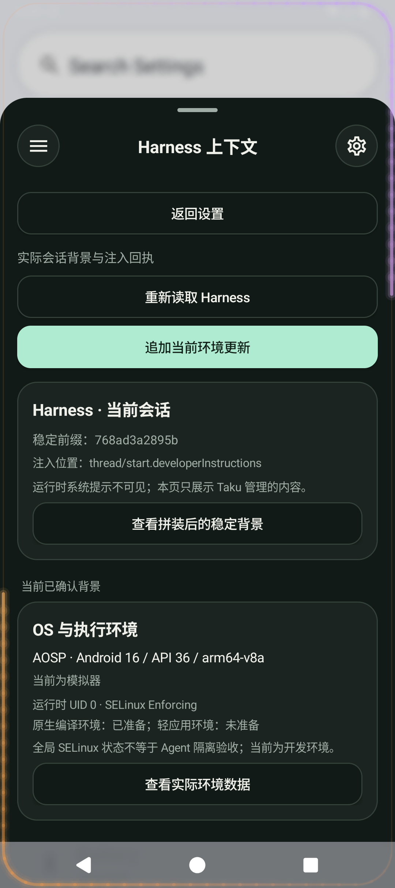

The Agent has context,
and traceable skills.
Both modules are integrated into the system assistant drawer and were verified with a real model and native UI on a dedicated Android emulator. These are actual device screenshots; this page is an acceptance report.
Emulator component acceptance passedHarness context
Stable context is assembled by module. Environment and skill changes are appended as new messages, preserving earlier context. Developers can inspect content, version, injection location, and the associated turns, tools, and usage.
identity → execution → boundaries → development → context-policy → os-environment → skills-catalog
Skills and community
Native discovery, enable/disable, and conversation loading, plus public community browsing and installation pinned to a commit. Built-in app-development guidance helps the Agent choose a light app or native APK route.
Public repository → pinned commit → download verification → native recognition → conversation use
All available in the upper-right settings.

Context overview
Inspect the stable prefix, injection location, and current environment; expand to read the complete context managed by Taku. Hidden runtime system prompts are outside the display scope.
Click screenshots for full size. Interaction acceptance covered expand, collapse, back navigation, Skills navigation, and light/dark themes.
What was verified
| Item | Actual result |
|---|---|
| Environment recognition | Model directly read AOSP / Android 16 / API 36 / emulator / background display 2 |
| Appended update | Response style updated to concise; prior context bytes and receipts stayed unchanged |
| Native cache usage | Two turns, cached / input: 12,288 / 26,184 → 25,984 / 31,147 |
| Community skill adoption | The model actually used security-threat-model and performed 7 read-only source inspections |
| Retest after restart | Existing conversation continued, latest context was readable, completed in 7.18 seconds |
| Recovery and consistency | Immutable snapshots, predecessor hashes, corruption rejection, and lagging-state recovery passed |
Stable prefix SHA-256
768ad3a2895b69f91af685bff385fa96151e84a1e5a449148cda3f143dcc1f34